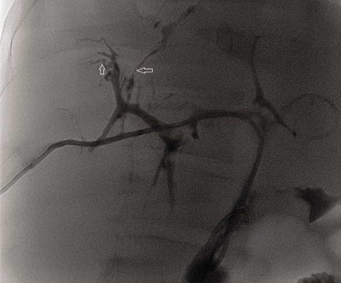
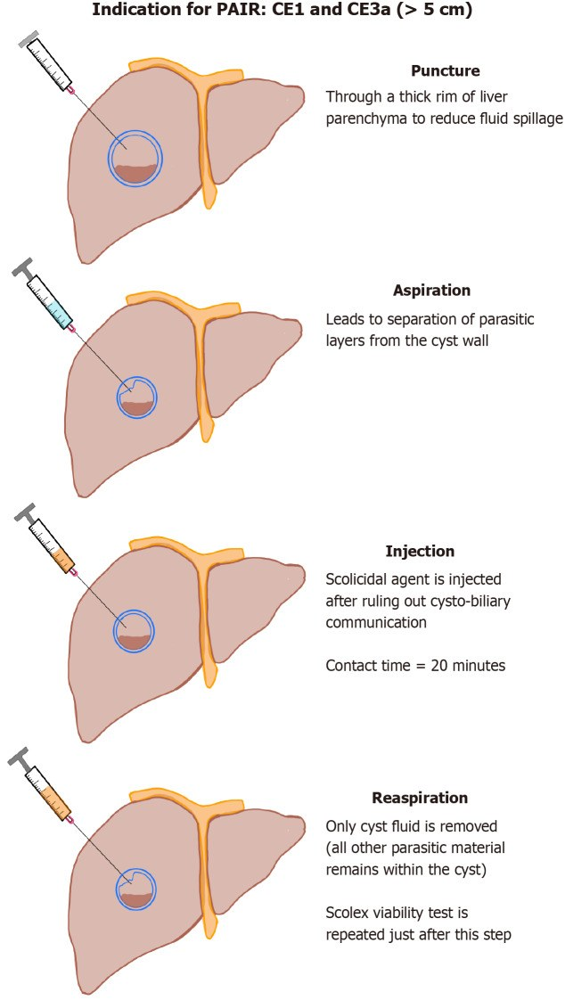
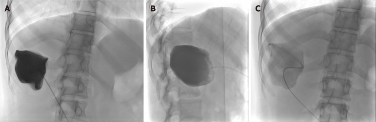
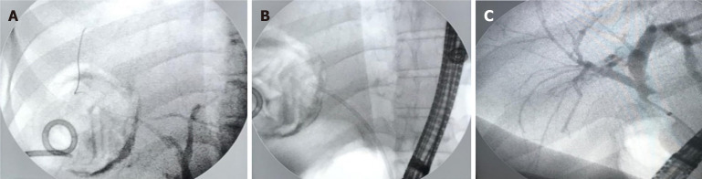
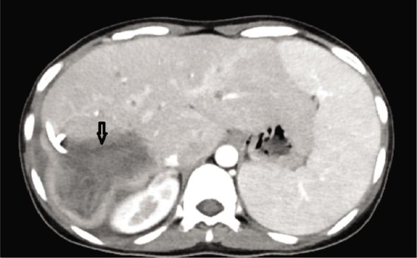

106 — Xơ hóa đường mật do chất diệt đầu sán (caustic sclerosing cholangitis): hẹp lan tỏa sau PAIR/mổ nang sán
Tags: pattern:hep-duong-mat pattern:xo-hoa vung:duong-mat vung:gan protocol:MRCP protocol:ERCP protocol:PAIR incidentaloma:hep-sau-can-thiep
Mức chắc chắn (certainty): tổng hợp y văn (literature synthesis) — bài tổng hợp từ hai ca nguyên văn có mô bệnh + loạt ca biến chứng + review kỹ thuật, chưa phải một thử nghiệm đối chứng.
1. Tổng quan — vì sao thuốc diệt đầu sán lại làm hẹp đường mật
- Bối cảnh: nang sán gan do Echinococcus granulosus (cystic echinococcosis, CE) được điều trị bằng albendazole, phẫu thuật hoặc can thiệp qua da. Trong PAIR (puncture–aspiration–injection–reaspiration) và các biến thể, người ta bơm chất diệt đầu sán (scolicidal agent) vào lòng nang để diệt đầu sán: NaCl ưu trương 20–30%, ethanol 95%, cetrimide 0,1–0,5%, povidone-iodine 10%; formalin gần như không còn dùng vì độc.
- Cơ chế tổn thương: các chất này diệt ký sinh trùng bằng sốc thẩm thấu, biến tính protein, phá màng tế bào. Nếu nang thông với đường mật (cysto-biliary communication, CBC), thuốc tràn vào ống mật → bỏng hóa học biểu mô đường mật: loét niêm mạc, viêm xuyên thành, rồi xơ hóa quanh ống mật và hẹp. Hẹp tiến triển có thể dẫn tới xơ gan mật thứ phát, tăng áp cửa, suy gan — phải ghép gan.
- TẠI SAO hình ảnh có dạng "hẹp nhiều đoạn": mô xơ co kéo làm lòng ống mật hẹp không đều, trong khi đoạn trên hẹp giãn ra vì ứ mật. Trên MRCP, chất lỏng trong lòng ống mật tăng tín hiệu mạnh trên T2, nên hẹp hiện ra như khoảng trống/giảm tín hiệu giữa các đoạn ống giãn; mô xơ quanh ống giảm tín hiệu T1/T2, ngấm thuốc muộn, không tạo khối. Trên CT, hẹp thường không thấy trực tiếp, chỉ thấy giãn đường mật trên hẹp, teo nhu mô và loại trừ khối. ERCP là chuẩn vàng vì vừa thấy lòng ống vừa điều trị được.
- Bốn yếu tố quyết định (Belghiti 1986, được nhắc lại trong Hepatology Forum 2024, PMC10936115): (1) có bơm chất diệt vào nang; (2) có thông mật–nang; (3) thời gian tiếp xúc kéo dài; (4) cơ địa nhạy cảm với chất đó. Thêm vào đó, tắc nghẽn đường mật dưới (mảnh màng/mảnh đầu sán sót) làm thuốc lưu lâu hơn và tăng áp lực trong ống mật.
- Định lượng nằm lòng:
- CBC trong PAIR: 5,4% (Bakdik, trích trong PMC10936115).
- Biến chứng chung của can thiệp qua da khoảng 9%; sốc phản vệ 0,38%; sán hóa phúc mạc thứ phát 1,3% (trích trong PMC10936115).
- Loạt 209 bệnh nhân (Hepatology Forum 2025, PMC11999902): biến chứng 33% (69/209); rò mật 18,2%; biloma 5,3%; áp-xe gan 1,9%; tràn dịch màng phổi 2,9%; sốc phản vệ 1%; hẹp đường mật 0,5%; tái phát 5,7%. PAIR có biến chứng 65,4% so với mổ 28,4% (p < 0,001).
- Nang ≥ 9,5 cm dự báo biến chứng: độ nhạy 70%, độ đặc hiệu 60%, AUC 0,624. Yếu tố nguy cơ rò mật–nang: > 7,5 cm, nang ở phân thùy trung tâm, Gharbi 3–4.
- Vỡ đường mật do nang: 3–17%. 27% các hẹp đường mật sau mổ là do bệnh nang sán (Yılmaz, trích trong PMC11999902).
- Thời gian: xơ hóa do chất diệt tiến triển vài tháng đến vài năm; PSC nguyên phát thường 10–14 năm mới phải ghép gan. Tổn thương do chất diệt khu trú ở đoạn đường mật tiếp xúc thuốc, không lan toàn bộ cây mật như PSC.
- Hai ca ghép gan (PMC10936115): ca 1 — nam 50 tuổi, PAIR với NaCl 20%, 8 tháng sau vàng da, đặt stent 5 năm, MELD 13 → 26, ghép gan năm thứ 6, tử vong sau 4 tháng vì nhiễm trùng bilioma; ca 2 — nữ 26 tuổi, PAIR với ethanol, ngay sau thủ thuật sốt, đau, tăng bilirubin, 26 ngày nằm viện rồi được chuyển trung tâm ghép và ghép gan (MELD 31,5), mô bệnh học có loét niêm mạc đường mật ngoài gan + dày mô liên kết, ổn định sau 31 tháng.
2. Mẫu hình + chẩn đoán phân biệt theo vị trí (gamut)
Mẫu hình chính: hẹp nhiều đoạn, không đều, giới hạn trong vùng đường mật dẫn lưu của nang đã can thiệp; giãn đường mật trên hẹp; không có khối; có thể kèm nang sán còn lại, mảnh màng, hơi trong đường mật sau can thiệp.
Gamut theo vị trí:
- Rốn gan/ống mật ngoài gan: xơ hóa do chất diệt (thường đoạn gần nang), tổn thương sau cắt túi mật (Strasberg), ung thư biểu mô đường mật rốn gan (Klatskin), IgG4-SC type 3–4, hẹp miệng nối sau ghép.
- Trong gan lan tỏa: PSC, thiếu máu (SSC-CIP sau sốc/hồi sức, sau ghép gan), xơ hóa do chất diệt, IgG4-SC type 2/5, cholangiopathy do AIDS, viêm đường mật mủ tái phát, Caroli.
- Ổ hẹp đơn độc: tổn thương sau cắt túi mật, hẹp miệng nối, xạ trị, ischema khu trú, ung thư đường mật.
- Kèm nang/hang: nang sán còn lại, rò mật–nang, áp-xe, biloma — các "bẫy" làm hẹp khó đánh giá.
Mẹo nhớ: tiền sử PAIR/mổ nang sán + vàng da xuất hiện sau vài tuần đến vài tháng + hẹp khu trú đúng vùng nang → nghĩ xơ hóa do chất diệt trước khi nghĩ PSC. Hẹp lan tỏa cả trong và ngoài gan + bệnh viêm ruột → nghĩ PSC. Hẹp trong gan lan tỏa, ống mật chủ xa bình thường, sau sốc/hồi sức → nghĩ thiếu máu.
3. Bảng so sánh phân biệt (ma trận đối chiếu)
| Thực thể (entity) | Hình ảnh điển hình | Chốt vào (rule-in) | Chốt loại (rule-out) | Gợi ý xác nhận |
|---|---|---|---|---|
| Xơ hóa do chất diệt đầu sán | Hẹp nhiều đoạn khu trú đúng đoạn đường mật dẫn lưu nang; giãn trên hẹp; không khối; có thể thấy nang/mảnh màng | Tiền sử bơm chất diệt + hẹp khu trú + loại trừ khối | Hẹp lan tỏa toàn cây mật, bệnh viêm ruột → PSC; khối ngấm thuốc → ung thư | MRCP; ERCP + brush cytology; đối chiếu vị trí nang cũ |
| PSC (primary sclerosing cholangitis) | Hẹp và giãn xen kẽ "chuỗi hạt" trong và ngoài gan; thành ống dày; không khối | Bệnh viêm ruột (80% viêm loét đại tràng ở PSC ống lớn) + hình chuỗi hạt + tuổi < 50 | Hẹp khu trú sau can thiệp nang sán → xơ hóa do chất diệt | MRCP; p-ANCA; nội soi đại tràng; loại trừ nguyên nhân thứ phát |
| Thiếu máu (SSC-CIP, sau ghép gan) | Hẹp trong gan lan tỏa, ống mật chủ xa bình thường; cast đường mật (dải sáng trong lòng); "cây bị tỉa" giai đoạn muộn | Sau sốc/hồi sức, tụt HA < 65 mmHg ≥ 60 phút, hoặc sau ghép gan; cast 87–93% | Hẹp khu trú + tiền sử nang sán → không phải thiếu máu | MRCP/ERCP; bệnh sử hồi sức; loại trừ hẹp do mạch máu |
| IgG4-SC | Hẹp thành dày đồng tâm, thường đoạn ống mật chủ xa hoặc rốn gan; tụy to; không chuỗi hạt điển hình | IgG4 huyết thanh > 135–140 mg/dL (78–88% ca) hoặc > 270–280 mg/dL (70%); viêm tụy tự miễn 83–92%; đáp ứng corticoid | IgG4 bình thường, không tổn thương tụy, hẹp khu trú sau nang sán | IgG4/IgG1 > 0,24 (độ đặc hiệu 95%); sinh thiết; thử corticoid có kiểm soát |
| Tổn thương đường mật sau cắt túi mật | Hẹp khu trú tại kẹp/vùng rốn gan; rò mật; giãn trên hẹp | Tiền sử cắt túi mật + hẹp khu trú + rò mật | Hẹp nhiều đoạn sau nang sán → xơ hóa do chất diệt | MRCP; ERCP; phân độ Strasberg–Bismuth |
| Ung thư biểu mô đường mật | Khối/ngấm thuốc bất thường, hẹp một đoạn tiến triển, giãn mạnh trên hẹp; teo thùy | Khối + CA 19-9 tăng + hẹp tiến triển + ngấm thuốc | Không khối, hẹp ổn định, tiền sử can thiệp nang sán | CT/MRI động học; ERCP brush cytology; PET/CT |
| Nang sán còn lại/rò mật–nang | Nang có vỏ, mảnh màng nổi, hơi/mức dịch; rò thuốc từ nang vào đường mật | Còn nang + thấy thuốc từ nang vào ống mật | Không còn nang, không rò → hẹp đơn thuần | US/CT/MRI; ERCP; xét nghiệm dịch nang |

Chụp đường mật qua ERCP: các nhánh trong gan bị hẹp không đều, mũi tên chỉ đoạn hẹp/gián đoạn — hình ảnh xơ hóa đường mật sau khi chất diệt đầu sán vào cây mật. Nguồn: Hepatology Forum 2024, PMC10936115, Fig. 1, CC BY-NC 4.0.4. Protocol chụp + hệ phân độ/điểm chuẩn hóa
- Trước can thiệp: siêu âm + CT hoặc MRI để phân loại nang theo WHO CE1–CE5, đo kích thước, xác định vị trí so với rốn gan/ống mật chính. MRCP khi nghi thông mật–nang hoặc nang ở trung tâm; MRCP giúp thấy đường mật mà không cần cản quang.
- Trong PAIR (nguyên tắc chống xơ hóa):
- Chọc kim 18 G qua một lớp nhu mô gan lành dày để giảm tràn dịch.
- Hút 20% thể tích nang; bơm thuốc cản quang 10% thể tích (hoặc nửa thể tích vừa hút) dưới fluoroscopy/CT để kiểm tra thông mật–nang.
- Kiểm tra dịch hút: màu vàng mật, que thử bilirubin, soi tìm đầu sán; nếu thấy mật/bilirubin dương/tắc mật–nang trên phim → DỪNG, không bơm chất diệt.
- Nếu không thông: bơm chất diệt (NaCl 20% hoặc ethanol 95%), thời gian tiếp xúc 20 phút, thể tích 35–50% thể tích nang ban đầu; sau đó hút hết, rửa NaCl 0,9%, kiểm tra lại sức sống đầu sán.
- Nếu có thông mật–nang: chuyển S-CAT (catheter 6–8 F, dẫn lưu trọng lực 24 giờ; chỉ bơm chất diệt khi dịch ra < 10 mL/24 giờ và không còn dịch mật) hoặc PEVAC (hút, không dùng chất diệt), hoặc mổ + ERCP.
- Sau can thiệp: theo dõi đau, sốt, vàng da, bilirubin/ALP/GGT; MRCP nếu cholestasis kéo dài hoặc xuất hiện vàng da. Với hẹp đã hình thành: ERCP nong bóng + đặt stent nhựa (thay stent định kỳ), kháng sinh khi có viêm đường mật, dẫn lưu áp-xe; hẹp kháng trị/xơ gan → phẫu thuật hoặc ghép gan.
- Theo dõi dài hạn: sau khi nang đạt CE4/CE5, theo dõi 5–10 năm; với hẹp do xơ hóa, theo dõi định kỳ bằng MRCP và xét nghiệm gan vì có thể tiến triển thành xơ gan mật.
- Không có RADS riêng. Phân loại dùng trong bài: WHO CE1–CE5 cho nang; Strasberg–Bismuth A–E cho tổn thương đường mật sau cắt túi mật (không dùng cho xơ hóa do chất diệt); mô tả hẹp theo vị trí + số đoạn + mức giãn trên hẹp.

Sơ đồ PAIR: chọc → hút → bơm chất diệt sau khi loại trừ thông mật–nang, thời gian tiếp xúc 20 phút → hút lại. Nguồn: World J Radiol 2026, PMC13122038, Fig. 4, CC BY-NC 4.0.
(A) Bơm cản quang vào nang: chỉ thấy lòng nang, không thấy đường mật → không có thông mật–nang, được phép bơm chất diệt. (B) Sau khi hút. (C) Sau khi bơm chất diệt. Nguồn: World J Radiol 2026, PMC13122038, Fig. 6, CC BY-NC 4.0.flowchart TD
A[Nang sán gan có chỉ định can thiệp] --> B[US, CT, MRI; cân nhắc MRCP]
B --> C{Có thông mật-nang?}
C -->|Không| D[PAIR: bơm chất diệt đầu sán 20 phút]
C -->|Có hoặc không chắc| E[Dừng, không bơm chất diệt]
E --> F[S-CAT hoặc PEVAC không chất diệt]
E --> G[ERCP nong, đặt stent]
D --> H[Theo dõi 1-3 tháng]
H --> I{Vàng da hoặc bilirubin tăng?}
I -->|Có| J[MRCP rồi ERCP]
I -->|Không| K[Theo dõi 5-10 năm]
- Khi đã có hẹp: ERCP là bước điều trị chính. Trong loạt 88 bệnh nhân rò mật sau can thiệp nang sán, ERCP đóng rò 100%, trung vị 20 ngày; cắt cơ thắt + stent tốt hơn cắt cơ thắt đơn thuần (OR 5,27; 95% CI 1,30–21,37), và lưu lượng rò < 400 mL/ngày dự báo đóng sớm (OR 3,43; 95% CI 1,37–8,55). Biến chứng ERCP 15,3%, chủ yếu viêm tụy nhẹ 5,9%, chảy máu 4,7%, viêm đường mật 4,7%.

(A) Thuốc thoát từ nhánh đường mật trong gan phải; (B) đặt stent nhựa 7 F; (C) ERCP kiểm tra lại thấy nhánh phải rõ. Nguồn: World J Gastrointest Surg 2025, PMC12679019, Fig. 2, CC BY-NC 4.0.5. Biến thể bình thường và cạm bẫy
- Thông mật–nang "ẩn": lưu lượng thấp, kiểu van một chiều, hoặc bơm cản quang không đủ thể tích/áp lực → phim âm tính giả. Vì vậy phải kết hợp màu dịch + que thử bilirubin + cản quang, và nếu còn nghi ngờ thì không bơm chất diệt.
- Hẹp xuất hiện muộn: hình ảnh ngay sau PAIR có thể bình thường; vàng da có thể xuất hiện sau vài tuần đến vài tháng. Không loại trừ xơ hóa chỉ vì MRCP lúc đầu bình thường.
- Nhầm với PSC: PSC có chuỗi hạt toàn cây mật, liên quan viêm loét đại tràng, tuổi < 50; xơ hóa do chất diệt khu trú và có tiền sử can thiệp nang. Gán nhầm PSC → tiên lượng và chỉ định ghép sai.
- Bỏ sót ung thư đường mật: hẹp "lành tính" vẫn có thể che ung thư; nếu hẹp tiến triển, có khối/ngấm thuốc, CA 19-9 tăng → brush cytology/sinh thiết.
- Sốt/đau sau PAIR: đừng mặc định là "hội chứng sau PAIR"; sốt + vàng da + tăng bilirubin có thể là viêm đường mật do xơ hóa/hẹp đang hình thành.
- Nang trung tâm/gần rốn gan: nguy cơ thông mật–nang và trào thuốc cao hơn; cân nhắc S-CAT/PEVAC thay vì PAIR có chất diệt.
- MRCP: hơi trong đường mật sau ERCP, clip kim loại, dòng chảy có thể tạo giả hẹp; đọc cùng T2 mỏng và ảnh ERCP khi cần.
- Biến thể giải phẫu: ống gan phải sau đổ vào ống gan chung/ống gan trái — có thể giả "hẹp" trên MRCP; đọc chuỗi liên tục trước khi kết luận.
6. Tự lượng giá — Blind Quiz
Ca 1 — Nam 50 tuổi, 8 tháng sau PAIR nang sán gan phải bằng NaCl 20%, nay vàng da và đau hạ sườn phải tái diễn.
- Hỏi: mô tả bất thường đường mật? Chẩn đoán nào giải thích vàng da muộn sau PAIR? Hai chẩn đoán phân biệt và bước xử trí?
Bấm để hiện đáp án
- Dấu hiệu: nhiều đoạn hẹp không đều ở các nhánh đường mật trong gan, giãn nhẹ trên hẹp, không có khối; mũi tên chỉ đoạn hẹp/gián đoạn.
- Chẩn đoán: xơ hóa đường mật do chất diệt đầu sán (caustic sclerosing cholangitis) sau PAIR với NaCl 20% — thuốc vào cây mật qua thông mật–nang, gây bỏng hóa học rồi xơ hóa.
- Phân biệt: PSC (chuỗi hạt toàn cây, bệnh viêm ruột), ung thư đường mật (khối, CA 19-9), hẹp lành tính sau can thiệp.
- Xử trí: ERCP nong + stent nhựa, kháng sinh khi viêm đường mật; theo dõi tiến triển xơ gan; nếu xơ gan mất bù → ghép gan. Ca nguyên văn đặt stent 5 năm rồi ghép gan ở năm thứ 6.
- Nguồn ảnh: Hepatology Forum 2024, PMC10936115, Fig. 1, CC BY-NC 4.0.
Ca 2 — Nữ 26 tuổi, ngay sau PAIR nang sán phân thùy 7 bằng ethanol: đau bụng tăng, sốt, bilirubin tăng. CT cho thấy nang còn catheter.

- Hỏi: vì sao triệu chứng xuất hiện ngay sau thủ thuật? Cơ chế tổn thương? Điều gì quyết định tiên lượng?
Bấm để hiện đáp án
- Dấu hiệu: nang sán lớn ở gan phải, có catheter trong lòng nang (mũi tên); không thấy khối đặc mới.
- Vì sao ngay sau thủ thuật: ethanol 95% gây bỏng hóa học trực tiếp biểu mô đường mật khi có thông mật–nang; phù/loét niêm mạc và tăng áp lực mật gây đau, sốt, vàng da sớm.
- Cơ chế: biến tính protein + phá màng tế bào → loét niêm mạc, viêm xuyên thành, xơ hóa quanh ống mật. Mô bệnh ca này có loét niêm mạc đường mật ngoài gan + dày mô liên kết.
- Tiên lượng: phụ thuộc mức tổn thương đường mật và chức năng gan; ca nguyên văn tiến triển suy gan (MELD 31,5), sau 26 ngày nằm viện được chuyển trung tâm ghép và ghép gan.
- Nguồn ảnh: Hepatology Forum 2024, PMC10936115, Fig. 2, CC BY-NC 4.0.
Ca 3 — Nữ 45 tuổi, nang CE1 8 cm gan phải, chuẩn bị PAIR. Sau khi bơm cản quang vào nang, phim fluoroscopy chỉ thấy lòng nang, không thấy đường mật.
- Hỏi: có được bơm chất diệt đầu sán không? Nếu có, thời gian và thể tích bao nhiêu? Nếu phim thấy đường mật thì làm gì?
Bấm để hiện đáp án
- Kết luận: không thấy đường mật sau bơm cản quang → không có thông mật–nang, được phép bơm chất diệt.
- Kỹ thuật: NaCl 20% hoặc ethanol 95%, tiếp xúc 20 phút, thể tích 35–50% thể tích nang ban đầu; sau đó hút hết, rửa NaCl 0,9%, kiểm tra sức sống đầu sán.
- Nếu thấy đường mật: dừng, không bơm chất diệt; chuyển S-CAT/PEVAC hoặc mổ + ERCP; nếu đã bơm nhầm → theo dõi sát cholestasis, MRCP/ERCP sớm.
- Nguồn ảnh: World J Radiol 2026, PMC13122038, Fig. 6, CC BY-NC 4.0.
Bài liên quan chéo
- 100 – Tổng quan hệ Bụng
- 107 – MRCP với gadoxetic acid & HBP
- 108 – Tổn thương đường mật sau cắt túi mật (Strasberg–Bismuth)
- 132 – Hẹp đường mật không xác định & cholangioscopy
- 133 – Hẹp miệng nối đường mật sau ghép gan
- 137 – Theo dõi stent/dẫn lưu đường mật: di trú, tắc, nhiễm trùng
- 139 – Sán lá gan (hepatic hydatid): phân độ WHO, PAIR + albendazole
- 179 – Biến chứng đường mật sau can thiệp u gan
- 633 – Nang sán đa cơ quan ở trẻ
Ảnh
- Tên file theo quy ước
106_slug_Modality_SourceID.jpg; nguồn và giấy phép từng ảnh ởimages/CREDITS.md. - Ảnh minh họa PAIR và kiểm tra thông mật–nang dùng sơ đồ/fluoroscopy từ review mở; không crop, không kéo giãn.
Không dùng để chẩn đoán độc lập khi chưa có người hướng dẫn.